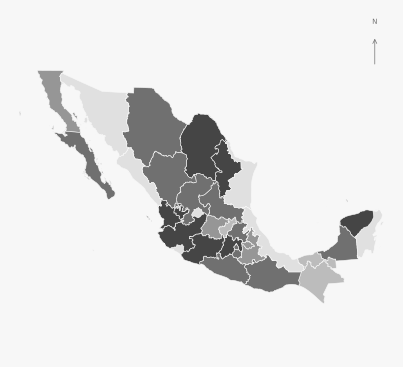

ESTADÍSTICA · CIENCIA DE DATOS · CIENCIAS DE INFORMACIÓN GEOESPACIALES
Los datos cuentan
una historia.
El territorio
les da contexto.
Un lugar en donde se le dan valor a los datos.
Explorar proyectos
01 / EXPLORACIONES
Proyectos seleccionados.
Preguntas reales. Métodos abiertos.
Otras formas de mirar la información.
02 / UNA FORMA DE TRABAJAR
La pregunta primero.
El método después.
De una buena pregunta a una lectura clara de los datos: un enfoque que reúne rigor, contexto y comunicación.
Entender el contexto
Definir la pregunta, conocer el territorio y reconocer los límites de la información.
Explorar y conectar
Integrar datos, identificar patrones y elegir métodos adecuados al problema.
Hacer visible lo importante
Comunicar hallazgos con mapas, visualizaciones y análisis reproducibles.
03 / DETRÁS DE LOS DATOS
Curiosidad por los datos.
Sensibilidad por el lugar.
Este portafolio reúne un interés por la estadística, la ciencia de datos y las ciencias de la información geográfica: distintas herramientas para comprender un mismo mundo.
Tu historia va aquí. Añade una breve presentación sobre tu formación, tus intereses y los problemas que te gustaría resolver.
04 / CONECTEMOS
Una buena conversación
puede ser el inicio.
Próximamente, tu correo y tus enlaces.
Personalízalos en el archivo script.js.